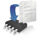

WELCOME TO NOTATIONAL TECHNOLOGIES EMBEDDED SYSTEM DEPARTMENT
Since its funding core competence of the company was design of embedded systems, mostly used for
advanced digital signal processing applications. Notational Technologies offers from the scratch prototype
development, which means integration of custom made hardware, PCB boards, drivers, software, and applications,
along with algorithm development with FPGA or DSP implementation. Our Technical Team member have developed
several solutions that integrated hardware and customized software for developed hardware platform in order
to optimize performance with appliance in various applications and markets including Flash Memories, Graphics processor,
entertainment and mobile devices.
We offer complete service in system level designing, developing, verification & validation,
maintaining, redesigning and integrating products as modules of large existing systems.
In order to successfully implement such projects Notational Technologies has multidisciplinary teams of highly skilled
embedded design engineers thus being able to offer set of services in this domain.
SYSTEM DESIGN
Notational Technologies offer from Scratch Development, thus we clearly know the idea and concept of our client's
expectation and we try to propose the perfect technology solution that can respond to market demands. Due to rapid changing requirements
in semiconductor market it is important to have solution that is modular, highly responsive and flexible to respond on market changes,
thus we always provide maintainable and upgradable solution.
We understand importance of innovation ( as its also our vision
"Intelligence to next gen innovation") and make sure that our solutions are always one step in front of competition on the market using
the cutting edge technology and innovative approaches.Every proposed system solution is based on detailed analysis of the product,
available technology and belonging market. We always have in mind new emerging technologies and standards we take full consideration
of effective cost, in time with best performance and quality.
Special accent is given to modularity of design in order to secure longer
product life cycle and enable easier and more cost effective upgrades and maintenance.System level design that Notational Technologies
offers are high quality End to End hardware solutions that integrates MCU, Systems-on-Chip (SoC), FPGA/DSP and with mixed signal capabilities.
These are other few Services we offer
- System architecture
- Product requirements analysis.
- Functional specification.
- Re-engineering of existing products.
- Optimization for production.
- Design for manufacturing.
- Functional Verification and Validation.
- Automated Testing and Manual Testing.
 HW AND SOFTWARE CO-DESIGN
Notational Technologies also works in HW and SW Co-Design, In this custom firmware development and embedded
operating systems in accordance with application requirements.For us its crucial importance that our software and DSP algorithms
should perfectly match, hardware platform and are well performing with operating systems without any latency Notational Technologies offer following services
- MCU/MCP programming, Microcontroller RTOS
- Code optimization and implementation for FPGA or DSP platforms
- Integration of IP cores
- Firmware development (development of custom device drivers, implementation, integration)
- Device Driver Validations.
- Embedded Operating Systems (Linux based)
- Testing and performance tuning
- Host Device Drivers (PC or Mobile)
DIGITAL SIGNAL PROCESSING
The main component of every cutting edge product nowadays, the features and quality that puts one product distinct
from another one, Notational Technologies Team is expert in Digital Signal Processing. As our founder having expertise in image &
video processing, telecommunications and complex mathematical algorithms. Also our team is equally experienced in this domain can
handle even the most demanding DSP tasks.
Whether it is completely new DSP algorithm development, porting and implementation for
specific platform or optimization in to get the full optimized performance. Whether it is video codec writing for new device, object
tracking, voice detection and analysis, or automatic detection of modulation type in telecommunications, or any other type of data/
information processing, our engineers can develop the solution for our client. Notational Technologies offers following solutions
in this domain
- DSP Algorithms Development (detection, analysis, filtering, transformations, etc.)
- Image and Video Processing
- Audio Processing
- Telecommunications
- Data analysis
- Algorithm Modelling, Simulation, and Benchmarking.
- Optimization for performance and accuracy
- Coding and optimization (C/C++, Assembly)
- DSP and/or FPGA implementation and optimization
- VHDL/Verilog coding
- Data acquisition